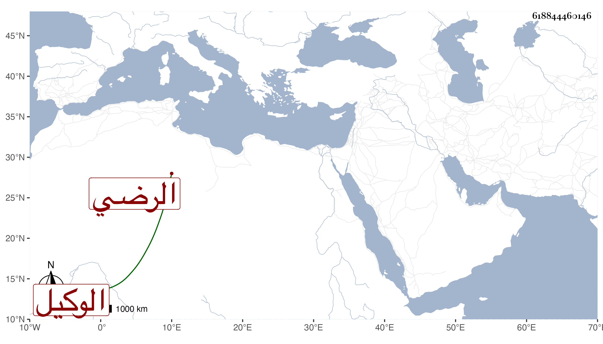

0902Sakhawi.DawLamic.ITO20230111-ara1.EIS1600.618844460146
Biography ID: 618844460146
282
محمد بن محمد بن عبد العزيز الرضي أبو البقاء بن البدر بن العز الوكيل جده ويعرف الجد بالفار . ولد حفظ العمدة واربعي النووي ومنهاجه مع مختصر أبي شجاع والفية ابن ملك مع الجرومية وحدود الأبدي وعرضها علي في جملة الجماعة بل قرأ علي جميع العمدة والأربعين ولازمني في التفهيم وكذا لازم عبد الحق السنباطي ثم ترك وحج في سنة ثلاث وتسعين وجاور وكان يتسبب هناك بباب السلام .
